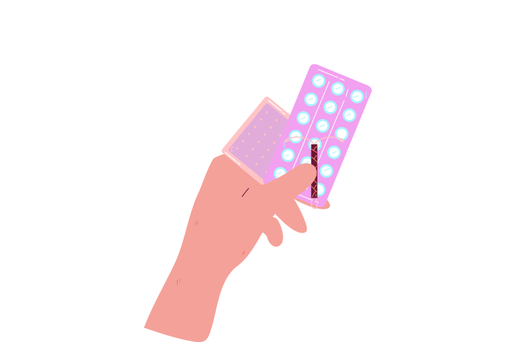
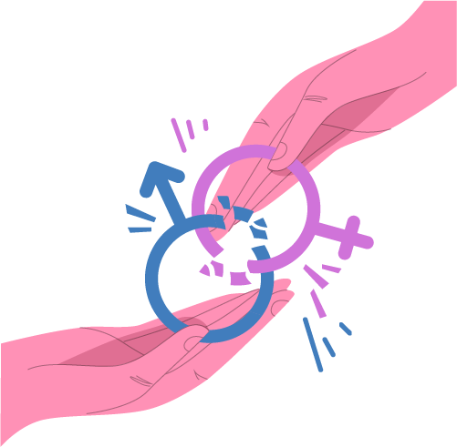

1495 – Primeros registros de sífilis
Se documentan casos de sífilis en Europa tras la llegada de los españoles a América.
Las Enfermedades de Transmisión Sexual (ETS) son infecciones que se transmiten principalmente por contacto sexual. Algunas pueden transmitirse también por sangre o de madre a hijo durante el embarazo.
Muchas ETS no presentan síntomas, pero cuando aparecen incluyen:
Algunas acciones efectivas para prevenir las ETS son:
Las ETS bacterianas como clamidia y gonorrea pueden curarse con antibióticos. Las virales como VIH o herpes no tienen cura, pero hay tratamientos para controlarlas.
Hablar abiertamente de ETS permite romper tabúes y detectar infecciones a tiempo. Muchas personas no saben que están infectadas y pueden transmitirlas sin saberlo.
Tienes derecho a recibir atención médica digna, acceder a información confiable y vivir tu sexualidad con libertad, respeto y cuidado. Estos derechos están protegidos por organizaciones como la OMS y Naciones Unidas.
Se documentan casos de sífilis en Europa tras la llegada de los españoles a América.
La penicilina comienza a usarse para tratar la sífilis y otras ETS bacterianas.
Se detectan los primeros casos del virus del VIH/SIDA en Estados Unidos.
Se aprueba la primera vacuna contra el Virus del Papiloma Humano (VPH).
Las ETS son prevenibles, tratables y diagnosticables. La información es tu mejor aliada.

"Aprender sobre salud sexual es cuidar tu futuro."